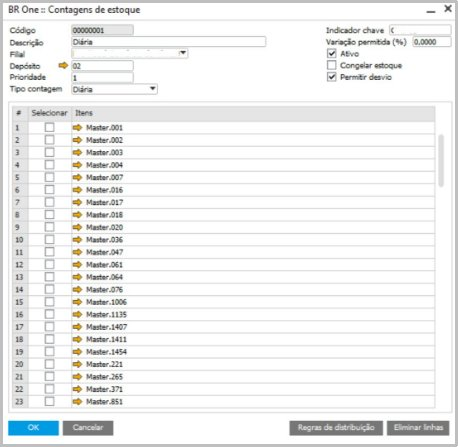

Telas BrOne Franquias no SAP
As telas BrOne na solução BrOne Franquias possuem um conjunto de funcionalidades: multiempresa e multifilial, unificação e padronização de cadastros, controle e transferência entre lojas, gestão de checklist e apontamento de atividades, integração com meio de pagamentos, dashboards e business intelligence, apurações gerenciais, abertura e fechamento de caixa. Aba de “Integrações” O add-on BrOne Franquias desenvolveu uma aba nova para as telas padrões do SAP de “Cadastro de PN” e “Cadastro do Item” para realização das funções necessárias de integrar os itens corretamente e outras funções dentro do sistema. Cadastro do Item – Aba “Integração” Dentro da tela de “Cadastro do Item” a aba de “Integração” possui campos relevantes para identificação do tipo de item a ser cadastrado (Tipo PLU ou Master), se faz parte de um combo, receita, cadastro modelo ou “mostrar somente código de barra padrão”. Essas configurações são de acordo com a necessidade do cadastro que está sendo feito e irá influenciar em outras telas no momento da integração.

Cadastro do Parceiro de Negócios – Aba “Integrações”
A aba de “Integrações” dentro da aba do “Cadastro do Parceiro de Negócios” faz a identificação do tipo de PN (se é corporativo ou não), se o esboço do recebimento será visível no APP, se o ___ e se o fornecedor em questão deverá fazer parte da configuração de frete incluso no preço.

Telas BrOne Franquias no módulo “Administração” no SAP
Dentro do módulo de Administração próprio do SAP, há três menus integrados original do BrOne Franquias utilizados para configuração do vínculo entre SAP e o Aplicativo das franquias do McDonald’s, sendo eles o módulo de Caixa e Cofre, o módulo de Checklist e o módulo de Estoque.
Módulo de Caixa e Cofre
O menu do BrOne Franquias de Caixa e Cofre oferece várias funcionalidades de configuração das filiais para o aplicativo no tablet que envolvem os caixas, cofres, meios de pagamento, período de trabalho etc.

Nas primeiras telas são definidas as adquirentes e bandeiras e os seus respectivos vínculos para utilização das formas de pagamento através da tela “Cadastro de Meios de Pagamento”. Essas configurações serão utilizadas pelas APIs de integração de vendas e fiscais referente aos Cupons Fiscais Eletrônicos (CF-e) e Notas Fiscais de Consumidor Eletrônica (NFC-e), entre outras utilizações, como por exemplo na tela de “Vínculo caixas e meios de pagamento” na qual é estabelecida qual caixa utilizará cada forma de pagamento em cada filial, além disso, é possível utilizar os cadastros realizados em relatórios dentro do SAP e nos Dashboards dentro do aplicativo e no Dashboard da TV.
Já na tela de “Configurações por filial” são estabelecidas as contas contábeis que serão utilizadas nos lançamentos de cofres e caixas do aplicativo, as configurações necessárias para a API de integração das vendas e de integração fiscal com o PDV, definições importantes para geração de nota fiscal de break (parceiro de negócio, utilização e sequência da NF), configurações para geração de nota fiscal de devolução (sequência da NF, utilização, condição de pagamento e impostos de recebimento), definições para documentos de compras (utilização e zona de mark-up) e as configurações para exportação das vendas dos documentos enviados para a Arcos Dourados de cada filial.
É neste módulo que os turnos de trabalhos da franquia são definidos através da tela de “Período de Trabalho”, os quais serão utilizados em filtros dentro do aplicativo, além de servirem para determinação das tarefas de turno.
Outras configurações importantes utilizadas nos Dashboards dentro do aplicativo e no Dashboard da TV que podem ser feitas são as definições feitas nas telas de “Segmentos” e “Grupo de vendas”, no qual é feita a segmentação dos caixas (delivery, autoatendimento, sobremesa, drive-thru etc.) e o grupo de vendas dos itens (lanche, McCafé, sobremesa, acompanhamento etc.) para serem exibidos na visualização dos dados.
Módulo de Checklist
A seção do BrOne de “Módulo de Checklist” no módulo de Administração do SAP contém todas as configurações necessárias para a utilização de checklists e tarefas de turno no aplicativo.

As checklists do aplicativo são definidas através deste módulo do SAP. Primeiro, as perguntas e respostas são criadas em suas respectivas telas de “Perguntas” e “Respostas”, que servirão para configurar as telas de “Grupos de Respostas” e “Grupos de Perguntas”.
Portanto, o processo é feito da seguinte forma, as perguntas de todos os formulários são definidas em “Perguntas” (por exemplo, “As bandejas estão limpas, sanitizadas e secas?”, “Foi efetuada a limpeza e sanitização dos bicos e difusores?”, entre outras) e todas as respostas e o formato dos campos de que serão utilizadas são definidos em “Respostas” (por exemplo: “Sim”, “Não”, “Não aplicável”, “Hora”, “Data” etc.). Para prosseguir com o processo, as respostas definidas devem pertencer a algum grupo estabelecido na tela de “Grupo de Respostas”.

Na imagem acima, por exemplo, foram definidas as respostas “Sim” e “Não” separadamente na tela de “Respostas” e agrupadas no grupo “Sim/Não” na tela de “Grupo de Respostas”. Esse grupo serve para criar uma opção de múltipla escolha dentro da checklist como resposta e servirá para criar os vínculos necessários com as perguntas definidas anteriormente em “Perguntas”.
No próximo passo, será configurado a tela de “Grupo de Perguntas”, que são os formulários de fato, no qual todas as perguntas que formarão uma checklist são definidas e são vinculadas com seu respectivo conjunto de respostas e o resultado esperado.

A imagem acima representa a tela de “Grupo de perguntas”, na qual todas as perguntas que foram criadas anteriormente na tela de “Perguntas” estão vinculadas com os grupos de respostas configurados no passo anterior e, além disso, é definida a resposta esperada do usuário para cada pergunta.
Além dessas telas, temos as “Tipos de Checklist” e “Checklist”, na qual a primeira define quais serão as categorias de checklist e a segunda realiza o agrupamento das checklists por seus tipos.
Módulo de Estoque
O menu do BrOne Franquias de “Módulo de Estoque” no módulo de Administração do SAP contém todas as configurações necessárias de estoque dentro do aplicativo.

A tela de “Contagens de estoque” define quais tipos de contagens estarão disponíveis dentro aplicativo para realizar o controle de inventário (podendo definir por diferentes períodos, sendo estes diários, semanais, quinzenais, mensais, ou por tipo de item estocável, como por exemplo uma contagem específica para materiais de limpeza).
Na imagem abaixo, é mostrado o exemplo de configuração do tipo de contagem diária, nos quais são estabelecidos quais itens de estoque (itens masters) farão parte desse controle, qual a filial que pertence a configuração, qual o depósito nas quais serão feitas as movimentações, entre outras configurações.
A tela de “Empréstimos entre Lojas” é utilizada para configurar a movimentação de estoque entre as filiais cadastradas no SAP e realizar o vínculo do depósito das saídas e entradas (1), além disso é possível determinar quais itens estarão disponíveis para realizar essas transações (2).
Descrição gerada automaticamente com confiança média](Aspose.Words.b96da4b3-9114-4f99-94a2-f867cff01808.009.png
A tela de “Controle de Quiosque” é utilizada para definir os quiosques ligados a alguma filial na qual são realizadas movimentações de estoque dentro do aplicativo, portanto é nesta tela que são feitas todas as configurações necessárias.

A tela de “Motivos de Saída de Estoque” define quais ações estarão disponíveis no aplicativo para realizar as saídas de estoque que não foram feitas por vendas (por exemplo, desperdícios completos e incompletos, breaks, promoções e outros).

É possível definir quais os itens estarão disponíveis para a transação, se serão Combos, PLUs ou Masters e qual o depósito que serão feitas as movimentações.

A última tela deste módulo é a de “Mapeamento de exclusão de campos”, na qual realiza um tratamento dos dados dos itens Masters e PLU que são recebidos através da API da Arcos Dourados, todos os campos que estão listados na tela não são utilizados e não há a necessidade de ocupar espaço na memória da base de dados do cliente, portanto são campos que devem ser excluídos no momento do recebimento dos dados desses itens.
Telas BrOne Franquias no módulo “Vendas – C/R” no SAP
Dentro do módulo de Vendas – C/R do SAP, há um menu integrado de origem BROne Franquias, utilizado para realizar atividades necessárias no gerenciamento das notas fiscais de saída, erros de processamento, metas de vendas e saídas de estoque das franquias do McDonald’s, chamado “Módulo de Vendas”.
Descrição gerada automaticamente com confiança média](Aspose.Words.b96da4b3-9114-4f99-94a2-f867cff01808.013.png
Log de Integração de Vendas
A tela de “Log de erro integração de vendas” apresenta todas as notas fiscais de saída e documentos de baixa de estoque que deram algum erro na integração dos itens presentes nos documentos, sendo possível descobrir o motivo do erro através da coluna “Log” e reprocessar os documentos após correção.

Motor Fiscal
A funcionalidade chamada “Motor Fiscal” gera os dados para realizar um cálculo que garante a correta tributação dos impostos incidentes nos Cupons Fiscais e uso atualizado de alíquotas através de um serviço de mensageria por uma API da OOBJ, na qual realiza o envio desses dados determinados pelo SAP para os itens PLU e um resumo para seus respectivos NCMs.
O objetivo dessa funcionalidade é efetuar a determinação de impostos de venda ao consumidor final e atualizar a mensageria fiscal com os dados necessários para a emissão dos documentos fiscais.
O usuário pode inserir os PLUs cadastrados no SAP e efetuar determinação de impostos e demais informações fiscais necessárias para a emissão de documento fiscal.
A determinação de impostos tem escopos para cada PLU e depois uma determinação por NCM, que será utilizado na mensageria para definir impostos de itens que ainda não tenham sido cadastrados no SAP.
Meta de Vendas
Já a tela “Meta de vendas” é utilizada para criar indicadores que serão visíveis no Dashboard de Vendas. O usuário determina manualmente através da tela as datas, o total das vendas e o total de guest counts, e então ao entrar no dashboard de vendas e selecionar o filtro que deseja terá os parâmetros de acordo com as definições feitas na tela do SAP, o registro deve ser feito separadamente para cada dia do ano.
Na imagem abaixo, por exemplo, foi configurado para a data “20/03/2023” o total de vendas em “R$ 27.000,00” e o total de GCs em “981”, o cálculo de ticket médio não aparece na tela, porém o resultado é obtido através da divisão do total das vendas pelo total de GCs, portanto, para este dia, o valor do TM é de R$ 27,52 aproximadamente.

Ao acessar o módulo de Dashboard de Vendas, após selecionar os filtros de seleção de filial e período no topo da página, os resultados de total das vendas, GCs e Ticket Médio serão exibidos e logo abaixo, marcado pelo símbolo de “target”, estarão as metas definidas na tela anterior.

Telas BrOne Franquias no módulo de “Compras – C/P” no SAP
Dentro do módulo de Compras – C/P do SAP, há a funcionalidade chamada “Frete incluso no preço” no qual auxilia na gestão necessária referente ao cálculo dos fretes que estão incluídos nos preços dos itens da Martin Brower.
Frete incluso no preço
Para atender uma necessidade das lojas McDonald’s de cálculo dos fretes incluídos nos preços dos itens, foi criada uma funcionalidade dentro do módulo de compras no qual permite a inserção dos dados dos itens. Essas informações são obtidas externamente da tabela de dados que o McDonald’s envia aos franqueados e são atualizadas manualmente e mensalmente.
Essa tabela alimenta dois relatórios dentro do SAP, o Ledger de Compras e o CMV, no qual realiza o cálculo do frete separadamente do preço do item de acordo com as informações obtidas nesta tela, assim o franqueado pode fazer a gestão e suas análises com maior exatidão.
É necessário configurar o parceiro de negócio na aba de “integrações” para ativar o “frete incluso no preço” para que os dados das notas fiscais sejam vinculados corretamente e apareçam nos relatórios de Ledger de Compras e CMV.

Relatórios Financeiros do BrOne Franquias
No módulo de Finanças do SAP os relatórios disponíveis

Relatório “Balancete”
O relatório “Balancete” é uma técnica para verificar se os lançamentos realizados em determinado período estão corretos, este relatório mostra um resumo de todas as contas e/ou parceiros de negócios para uma data específica, têm seu modo de funcionamento parecido com o padrão do SAP Business One, tendo como diferença o modelo do McDonald’s.

Critérios de Seleção
Período da data
O campo “Tipo de data” define o parâmetro que será consultado, sendo possível escolher entre três campos, sendo eles a data do documento, na qual informa o dia que foi lançado pelo usuário, data de lançamento, na qual informa a data em que o documento foi lançado e data de vencimento. Os campos “Data de” e “Data até” são utilizados para definir o período que deseja filtrar os dados de acordo com o tipo de dado.
Exibir no relatório
Nomes estrangeiros – apresenta apenas os nomes estrangeiros definidos para contas do Razão em Financeira Plano de contas Detalhes da conta Nomes estrangeiros. Quando se seleciona esta caixa de seleção, nada é apresentado para contas para as quais não tenha sido definido um nome estrangeiro.
Código externo – apresenta códigos externos definidos para contas do Razão em Financeira Plano de contas Código externo.
Moeda – O campo define o parâmetro que será apresentado, tendo duas opções disponíveis, a moeda corrente ou a moeda do sistema.
Saldo Inicial para Período – O campo define o parâmetro que será mostrado no relatório, podendo selecionar a opção de “Não exibir SI (Saldo Inicial)” quando não quiser fazer nenhuma comparação ou escolher entre outras três opções de exibição de saldo, caso seja necessário distinguir entre o saldo do período selecionado com o saldo de períodos anteriores, sendo as opções de “Saldo de abertura desde início atividade da empresa” no qual apresenta o saldo de abertura acumulado desde o início da atividade da empresa, “Saldo de abertura do início do exercício” no qual apresenta o saldo de abertura acumulado desde o início do exercício corrente e “Dividir SI para débito/crédito a partir do início das atividades da empresa” sendo parecido com a primeira seleção, diferenciando apenas pela divisão dos valores em débito e crédito.
Adicionar pré-lançamento contábil – Inclui no relatório as transações em aberto que estão registradas em pré-lançamentos contábeis, mas ainda não foram gravadas no banco de dados.
Ignorar ajustes – O relatório exclui do cálculo do saldo os lançamentos de ajuste no diário.
Configurações de exibição
Nível – Exibe os detalhes dos débitos e créditos das contas de acordo com seus níveis, quanto maior o nível, maior será o detalhamento no relatório.
Contas com saldo zero – Marque este campo de seleção para exibir as contas com saldo zero do relatório.
Detalhes do centro de custos –
Critérios de seleção –
Filtros opcionais
Centro(s) de custos –
Regra(s) de distribuição –
Projeto(s) –
Dimensão –
Modelo –
Relatório “Contas a Receber e Recebidas”
O relatório de Contas a receber e Recebidas exibe


Relatório “Contas Pagas por Bancos”
Relatório “Contas Recebidas” Relatório “Balanço” Relatório “Razão” Relatório “Contas a Pagar e Pagas” Relatório “Conciliação Vendas e Recebimentos” Relatório “Extrato Contábil e Bancário” Relatório “Razão v3.13” Relatório “Contas Pagas” Relatório “Contas a Pagar”
Relatórios de Compras do BrOne Franquias
No módulo de Compras do SAP são dois relatórios eletrônicos que são utilizados dentro do aplicativo: Ledger de Compras. Este relatório resume todas as notas fiscais de entrada com os processos finalizados (ou seja, até a etapa de nota fiscal de entrada com impostos contabilizados e disponível para contas a pagar).
Para mais informações sobre seu funcionamento, vide item “4.7.5. - Ledger de Compras”.

A diferença entre a primeira versão e a segunda é referente aos campos de frete incluso no cálculo, sendo que a segunda possui essa função e a primeira não.